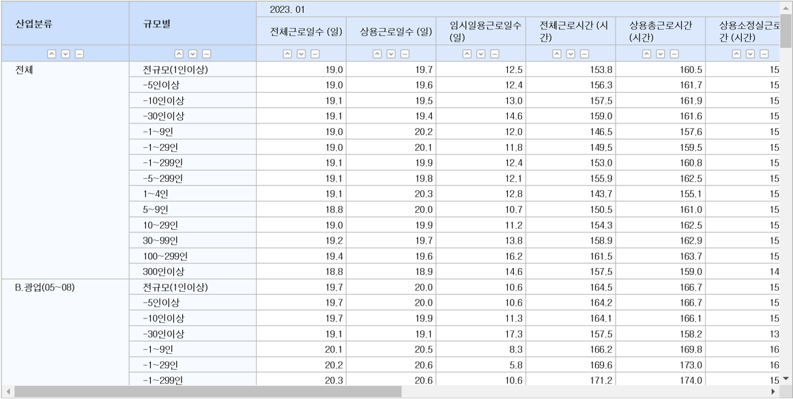
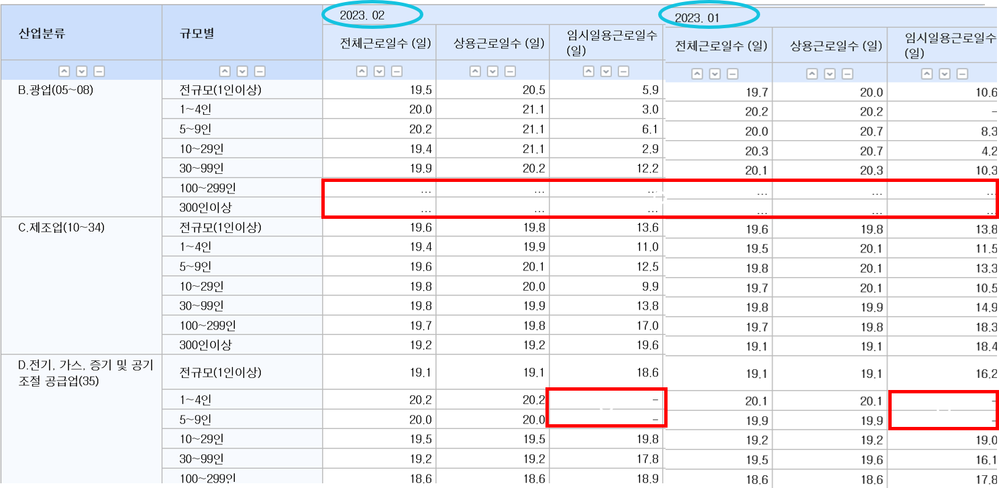
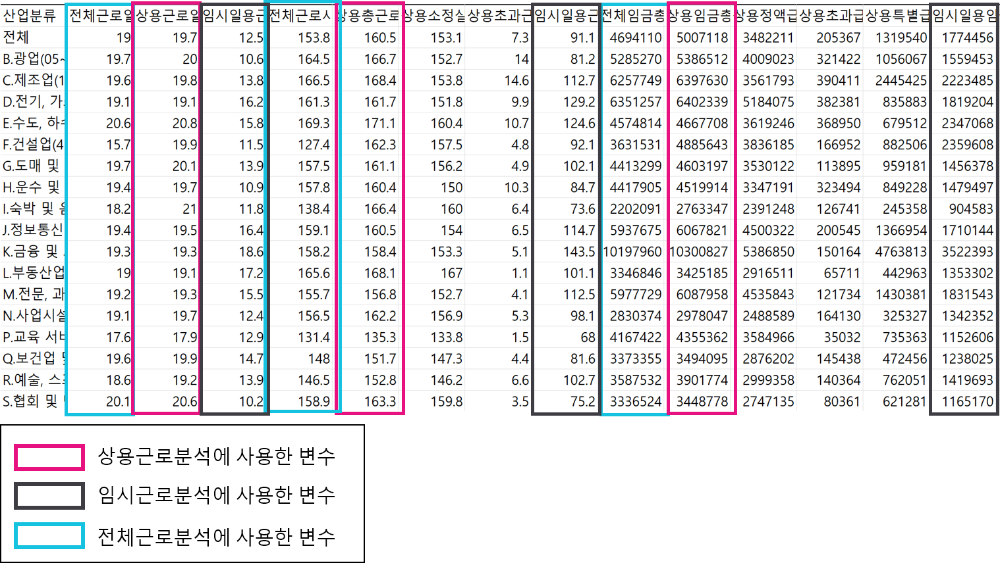
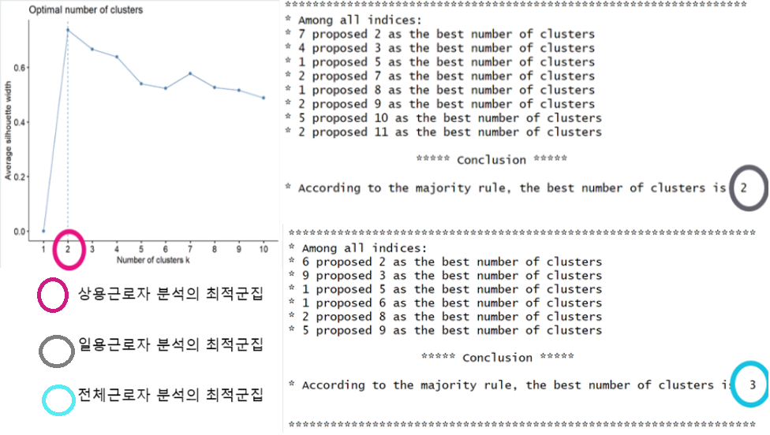

최근 노동계에서는 노동개혁에 대한 정책안이 오고 갔다. 윤석열 대통령의 노동개혁 발언 이후, 각 정당은 주 69시간 근무제와 주 4.5일 근무제 등 다양한 노동정책을 내놓았고, 주 69시간 근무제는 입법예고까지 도달했다가 폐기되는 등 더 이상 노동 개혁이 멀지 않은 상황이다. 이에 착안해 국민들이 각 정책에 대해 어떻게 생각하고 있으며, 그 이유가 무엇인지, 그리고 실제 정책이 시행될 경우 어느정도 호응이 있을지에 대해 연구하기로 했다.
주 69시간 근무제란, 기존의 1주일 최대 노동시간을 52시간으로 제한했던 주 52시간제의 단위를 확장하는 제도다. 즉, 최대 1개월 단위까지 평균 주 52시간을 지키고, 최대 주 69시간 이상의 노동을 하지 않는다면 책임을 묻지 않는다는 정책이다. 객관적으로 총량을 늘리는 것이 아닌, 집중적으로 근무하고 집중적으로 휴식한다는 것이 정부의 입장이다.
한편, 주 4.5일제는 아직까지 정확한 실현 방안이 발표되지는 않았다. 다만, 주 4.5일 근무제를 제안한 더불어민주당에서는 주 69시간 근무제를 폐기하고 현재의 주 52시간 근무제를 점차적으로 주 4.5일 근무로 축소해야한다고 주장하였다. 주 4.5일 근무제에 대한 근거로는 노동현실 개선 및 노동자 안전 보장, 근무단축 과정에서 발생하는 추가 인력 수요를 통한 실업 감소 등이 있었다.
현 실태, 69시간제, 4.5일제에 관하여 각각 데이터 수집 후 각각에 대한 선행적인 분석을 하였다. 그 후, 분석 결과들을 취합하여 통합적으로 분석을 진행한 후, 문제점, 그리고 보완점에 대하여 생각했다.
현 실태는 지금 현행 정부에서 시행하고 있는 주 52시간제, 즉 주 5일제 근무를 지칭한다. 현 실태의 경우 통계청의 산업 규모별 임금과 근로시간 데이터를 이용하였다. 고용노동통계조사에 있는 산업 규모별 임금과 근로시간의 데이터를 2022년 3월에서 2023년 2월까지의 1년치 자료를 월별로 수집되어있는 자료로 1달 단위로 구분된 자료로 총 12개월의 자료가 있다.

추이를 확인하고자 했으면 시계열 분석을 활용해야하겠으나 이번에는 현 상태를 파악함에 더 초점을 두었기 때문에 동일 변수에 대하여 12개월에 대한 평균을 구하여 진행했다. 평균은 형평성을 위하여 따로 가중치를 두지 않았다.

이 데이터는 결측치가 존재하는 데이터였다. 이에 결측치는 전년도 해당 월 데이터를 이용하여 보외법을 사용하였다. 보외법은 한정된 데이터 속에서 그 사이의 값을 추정하는 방법이다. 이 데이터의 경우 5년치 연도의 월별 추세가 비슷했기 때문에 이 기법이 사용되었다.

먼저 군집분석을 진행하였다. 상용, 일용, 전체의 시간, 일, 임금총액이 있고, 상용직 근로자, 일용직 근로자, 그리고 전체 근로자에 대한 군집분석을 진행하였다.상용직은 임금을 받으며 일하는 근로자 중 매일 일자리를 찾지 않고 안정적으로 고용되어 있는 사람을 지칭한다. 일반적으로 1년이상 고용계약기간이 존재하는 사람들을 총칭한다. 일용직의 경우 1개월 미만으로 고용되는 사람들을 지칭한다. 상용직, 일용직, 그리고 전체에 대한 최적 군집 수를 구하기 위해 상용의 경우 실루엣 방식을 활용하였으며, 나머지는 Nbclust를 사용하였고, 그 결과는 각각 2, 2, 3이다.

상용근로자의 군집분석 결과는 다음과 같다.
위 결과를 통해 군집1은 적게 일하고 임금을 많이 받는 집단, 군집 2는 많게 일하고 임금을 적게 버는 집단을 의미하고 있음을 알고 있었다.
일용직근로자의 군집분석 결과는 다음과 같다.
위 결과에서 군집1은 많이 일하고 많이 버는 집단, 군집 2는 적게 일하고 적게 버는 집단으로 나눌 수 있었다.
마지막으로 전체근로자의 군집분석 결과는 이와 같다.
위 결과에서 군집1은 평균적으로 일하고 많이 버는 집단, 군집2는 많이 일하고 평균적으로 버는 집단, 그리고 군집3은 적게 일하고 적게 버는 집단으로 나눌 수 있었다.
위 분석 결과만으로는 현 실태에 대해 명확히 파악하는 것에 한계가 있기 때문에 고용노동통계에 있는 30인 기준으로 각각 종사자, 이직자, 자발적, 비자발적에 대한 데이터가 있는 자료를 활용하기로 결정하였다.
위 자료를 전에 시행하였던 군집분석 결과와 접목해 각 군집 당 종사자, 이직자, 자발적, 비자발적의 특성을 파악해 보기로 하였다. 이직자, 자발적 퇴사자, 비자발적 퇴사자 상관없이 인원 수의 차이가 났기 때문이다.
현재 나누어진 군집 상태는 다음과 같다.
전체에서의 1군집은 많이 일하고 많이 버는 집단, 2군집은 적게 일하고 적게 버는 군집이다. 전체 근로자는 67:33, 이직자는 45:55, 자발적 퇴사자 비율은 64:36, 비자발적 퇴사자 비율은 30:70 정도로 나옴을 알 수 있다. 상용근로자의 경우 1군집은 많이 일하고 적게 버는 군집, 2군집은 적게 일하고 많이 버는 군집으로 나누었고, 근로자는 62:38, 이직자는 69:31, 자발적 퇴사자 비율은 76:24, 비자발적 퇴사자의 비율은 78:22로 나타났다. 마지막으로 일용근로자의 경우 1군집은 많이 일하고 많이 버는 군집, 2군집은 적게 일하고 적게 버는 군집으로 나누었다. 이때 근로자의 비율은 16:84, 이직자는 16:84, 자발적 퇴사자는 15:85, 비자발적 퇴사자는 15:85정도이다.
이것을 그림으로 정리해보니 다음과 같았다.
여기서 주목해야 될 것은, 전체의 군집2에 속하는 많은 직종들이 상용근로자의 1군집, 그리고 일용근로자의 2군집에 많이 있다는 것이다. 그리고 비자발적 퇴사율의 경우, 이 직종들에 많음을 볼 수 있었다. 이는, 조사를 통해 이 특정 직종들이 계절성을 많이 타거나 타 군집에 비해 언제든지 일을 하고 관두기 쉬운 직종임을 알 수 있었다. 뿐만 아니라 현행법상 기본적으로 52시간제에 기반에 두고 있기 때문에 근로시간보다는 임금의 영향이 상대적으로 더 크다는 것을 발견할 수 있었다. 퇴사율의 경우, 압도적으로 임금이 적은 집단에서 많이 발견되는 반면, 이직율의 경우, 계절성을 타지 않는 집단을 위주로 고려했을 때 크게 차이가 나지 않는다고 볼 수 있었다. 별도의 조사를 통해 사람들이 퇴사 혹은 이직을 하는 이유를 파악했다.
잡코리아, 사람인 등의 취업사이트를 통해 확인한 결과, 퇴사 혹은 이직을 하는 사유에는 크게 회사의 복리후생 부족, 업무를 통한 성취감 획득 불가, 열악한 근무환경, 과도한 근무시간, 부족한 근로임금, 그리고 건당/임신 등의 기타 사유등이 있음을 알 수 있었다. 여기에서 볼 수 있듯이, 임금과 근로시간은 이직과 퇴사에 영향을 미치지만, 그것만이 아닌 다른 여러가지 사유들이 존재할 수 있음을 알 수 있었다. 이 자료를 통해 현재 왜 노동개혁이 필요하며 69시간제와 4.5일제에 관한 논쟁이 나왔는지는 알 수 있었다.
네이버 API를 활용하여 뉴스, 블로그, 댓글이 있는 사이트를 찾은 후, 각 사이트에 대하여 크롤링을 하는 방식으로 데이터를 수집했다. 실제로 시행되지 않은 정책이므로 뉴스, 블로그 댓글이라는 매체를 활용해 각 정책에 대하여 조사하고 사람들의 선호도와 의견을 정리하는 방식을 채택하기로 했다. 수집을 한 후, 워드클라우드, 자료 빈도분석을 통한 요약, 그리고 감성분석을 사용하여 분석을 진행하였다.
뉴스데이터와 블로그 데이터를 수집하기 위해 작성한 코드는 다음과 같다. 예시 코드는 네이버 API 사이트에 소개가 되어있다. 수집할 때 키워드가 필요했기 때문에 주 69시간제와 주 4.5일제에 대하여 각각 ['주 69시간', '주 60시간'], ['4.5일제', '주 4일제']이라는 키워드를 사용하였다.
네이버 API로는 제목, url, 쓰여진 연월일시 등 제한적인 자료만을 수집할 수 있었다. 사람들의 의견과 생각을 알기 위해서는 실질적인 내용이 필요하므로 네이버 API를 활용하여 제목과 URL을 수집한 후, 셀레니움을 활용하여 블로그 및 뉴스 내용을 수집하였다.
크롤링을 진행함에 따라 사이트에 따라 본문 내용이 적힌 HTML속 이름이 다른 경우가 많음을 알 수 있었다.이에 네이버 블로그 혹은 뉴스와 기타 사이트를 구분하여, 네이버 사이트는 크롤링을, 기타 사이트는 링크를 통해 내용을 직접 수집하기로 결정하고, 각 자료를 csv 파일에 저장하였다.
다음은 수집한 예시이다.
크롤링을 진행한 후 얻은 뉴스, 블로그, 뉴스 댓글 자료를 이용해 3가지 방식으로 분석을 진행했다. 뉴스의 경우 워드 클라우드와 빈도 수를 활용한 내용 요약을 활용하여 각 정책 별 주장, 근거 및 정책에 대한 상황을 확인했다. 댓글의 경우 빈도 수를 활용한 워드 클라우드와 내요 요약을 통해 사람들의 생각을 파악하고자 했고, 간단한 감성분석을 통해 사람들의 긍정 부정 여부를 파악하고자 했다. 마지막으로 블로그를 활용하여 사람들이 이 정책에 대해 실질적으로 어떻게 생각하나 요약을 통해 파악을 하고 싶었지만 상관없는 내용도 같이 수집되는 경우가 많았기 때문에 의견에 대한 참고용으로 활용하였다.
워드 클라우드는 다음과 같이 가장 많이 쓰인 50개를 사용하여 다음과같이 워드클라우드를 만들어 직관적으로 보는데 사용하였다.
빈도 수를 활용한 내용 요약의 경우 가장 기초적인 방식을 활용한 것으로 가장 많이 쓰인 단어가 가장 많은 문장들로 추렸다. 그 후, 그 문장들을 직접 조정하고 다듬었다.
마지막으로 감성분석의 경우, KoBERT에서 제공하는 monologg/KoELECTRA 모델을 가져오고, 이 모델을 다른 깃허브에서 제공한 네이버 영화 댓글 자료로 파인튜닝한 후, 분석을 하는데에 사용하였다. 다른 자료를 활용하기에는 시간적 여유와 사이트 차단등의 이유로 인해 수집이 불가능하여 네이버 뉴스 댓글만 사용하였다.
먼저, 69시간제에 대한 뉴스의 워드 클라우드는 다음과 같다.
대통령이 가장 자주 언급되었으며, 노동시간, 반대, 퇴근, 임금 등에 대하여 언급이 많았다. 정보 전달의 역할을 하는 뉴스 특성상 뉴스 워드클라우드에서는 근로시간과 대통령 등의 정책 발제자와 정책의 핵심 키워드가 추출되었고, 반대, 문제, 비판, 논란 등의 단어로 미루어 보아 정책에 대한 비판적인 논조를 지닌 뉴스가 많았음을 알 수 있었다.
내용 요약을 한 최종 결과는 다음과 같다.
이것을 통해 사람들은 69시간제에 대해서 상당히 비판적이라는 것을 알 수 있다. 또한 뉴스 내용임에도 불구하고 전혀 상관없는 이야기가 같이 나오는 것으로 보아 다른 사연이 있을 것이라고 생각했다.
다음은 69시간제에 대한 댓글에 대한 워드 클라우드이다.
마찬가지로 대통령에 대한 이야기가 많았고, 비판적인 의견이 많았다. 별도로 150개 최빈단어를 확인해본 결과, 댓글 워드 클라우드에서 더 심화되어, 노예, 없는, 탄핵 등의 강경한 단어들이 언급된 것이 확인되었다.
댓글의 분위기를 파악하기 위해 감성분석을 수행한 결과 댓글 수는 7265개, 찬성하는 사람은 약 35%, 반대하는 사람은 약 65%였다. 찬성과 반대하는 이유에 대해서는 이유가 없거나, 인신공격을 하는 등의 이유도 존재했지만, 합리적인 이유를 든 찬성과 반대 사유를 별도로 확인하였다. 찬성 사유에는 현장에 대한 고려가 있다는 점과 임금의 충분함을 들었으며 반대의 사유로는 대개 가정과 육아문제, 행복문제, 근로의 효율성 문제, 과로 및 과로사 등의 건강 문제, 그리고 세계의 추세를 근거로 하였다.
이를 통해 상당히 이 정책에 대하여 상당히 비판적이고 반대가 많음을 알 수 있었다.
주 4.5일제에 대한 뉴스의 워드 클라우드는 다음과 같다.
민주당의 내용이 많았으며, 노동, 임금, 단축, 등의 단어가 공통적으로 언급되었다. 이때 민주당은 정책 발안 주체이기에 언급되는 경향이 많았으며, 호주, 뉴질랜드, 일본 등 우리나라에 선행하여 주 4일제를 실시한 국가들의 이름 역시 확인된다. 69시간제와 마찬가지로, 사람들은 이 정책 또한 비판적인 생각을 많이 가지고 있음을 알 수 있었다.
내용 요약을 한 최종 결과는 다음과 같다.
뉴스의 내용 요약에서는 현 상황에서의 사람들의 생각, 외국에서 선행적으로 진행되고 있는 정책들에 대한 이야기, 그리고 왜 필요로 하는 것인지에 대한 내용이 주였다.
다음은 4.5일제에 대한 댓글에 대한 워드 클라우드이다.
돈과 민주당, 노동, 임금, 단축 등의 단어가 많았다. 민주당은 정책 발안 주체이기에 언급되는 경향이 많았으며, 호주, 뉴질랜드, 일본 등 우리나라에 선행하여 주 4일제를 실시한 국가들의 이름 역시 확인되었다.
총 댓글 수는 3400개로 주 69시간제의 댓글 수의 반절정도 되었다. 하지만 주 4.5일제의 경우도 주 69시간제와 마찬가지로 찬성이 약 20퍼, 반대가 약 80퍼로 반대가 더 많았다. 찬성 사유로는 삶의 질과 과거 사례를 사용하여 말하였으며, 반대 사유로는 임금 문제 및 경제, 즉 자원부족과 회사의 수익부족 문제를 언급하였으며, 빈부격차와 사회불평등 심화, 업종 차이간 격차 심화, 한국인의 마인드 등을 언급하였다.
Temporibus ad error suscipit exercitationem hic molestiae totam obcaecati rerum, eius aut, in. Exercitationem atque quidem tempora maiores ex architecto voluptatum aut officia doloremque. Error dolore voluptas, omnis molestias odio dignissimos culpa ex earum nisi consequatur quos odit quasi repellat qui officiis reiciendis incidunt hic non? Debitis commodi aut, adipisci.
현 근로시간제인 주 52시간제의 경우, 군집분석을 통해 많이 일할수록 많이 벌 수 있는 기조가 있다는 것을 알 수 있었다. 그 중 상용근로자의 경우 근로시간에 비해 많이 버는 집단이 존재하며, 특정 기술이 요구되는 직종이 그러지 않은 직종보다 임금이 높은 편임을 알 수 있었다. 또한, 수집한 블로그를 통하여 추가적인 조사를 해보았을 때 보완점, 혹은 노동개혁을 진행하더라도 수당으로 유연성을 확보하는 것이 낫고, 69시간의 법제화는 악용의 소지가 있으므로 유지를 추구해야된다고 주장했다. 주 69시간제와 주 4.5일제에 관해서 정리한 내용은 아래와 같다.
SWOT 분석을 통해 69시간제와 4.5일제에 관하여 정리를 해보았다.
다음은 69시간제에 대한 SWOT 분석이다. 내부적인 장점으로는 기업 노동의 안정화, 업무의 강한 유연성, 그리고 크런치모드, 즉 업무를 집중해야되어 노동시간이 일시적으로 증가하는 경우 확실히 보상이 주어질수 있다. 하지만 내부적인 단점으로는 기업의 악용소지, 노동자에 대한 착취가능성, 가정계획 실현의 불가능이 있다. 외부적인 장점으로는 시행령 등을 통한 정책 보완 가능성, 감소중인 생산성에 대한 강력한 정부 개입의 성공가능성을 들 수 있다. 마지막으로 외부적인 단점으로 세계 추세와의 역행으로 인한 인재 유출 가능성과 청년 노동자의 불응 가능성이 있다.
다음은 4.5일제에 대한 SWOT 분석이다.
내부적인 장점으로는 노동자의 개인 시간 보장, 노동 효율성 상승의 가능성, 그리고 기업의 1인당 고용지출의 감소가 있다. 내부적인 단점으로는 노동자 임금감소로 인한 삶의 질 하락 가능성, 업종별 노동시간의 차이를 고려하지 않는다는 점, 그리고 국가총생산의 감소가능성이 있다. 외부적인 장점으로는 정책 호응 증가로 인한 후속 정책 입안의 유연화와 세계 추세에 따른 정책 입안에 따른 follower’s profit 획득이 가능하다. 마지막으로 외부적 단점은 임금 감소로 인한 사회불평등 구조화 문제와 생산성 감소라는 현재 정책문제를 해결할 수 없다는 점이다.
두가지 분석을 통해 정책 보완의 필요성을 느꼈다. 노동이 집중적으로 이루어지는 업종의 경우 주 69시간제가 허용되어야 할 필요성이 다수 존재함을 느꼈다. 하지만 노동자의 삶의 질을 필연적으로 하락시키고, 따라서 이에 대한 보상책 역시 마련되어야한다고 생각했다. 또한, 인재 유출 가능성이 있기 때문에 이것을 방지하기 위해 근로시간제를 이원화, 추가 인센티브, 사내 복지 제도 개선 등의 법제화를 통해 추가적인 취업유인이 필요하다고 생각했다. 주 4.5일제를 시행할 경우 생산성 감소는 불가피하므로 생산성 감소를 최소화할 수 있는 방안을 모색해야된다고 생각한다. 또한 감소된 만큼 추가적인 인력 고용을 통해 생산성을 보완하며 정규직과 비정규직 간의 임금 격차 및 사회 불평등 문제 해결을 위해 추가적인 부가정책을 시행하는 것 또한 한가지 방법이라고 생각한다. 이 때, 중소기업 등 추가 고용으로 인해 부담을 갖는 기업에 대한 지원제도를 시행하는 것도 한가지 방법이라고 생각했다. 마지막으로 사회적 박탈감 등의 문제는 따로 논의해야된다고 생각했다.
분석의 대상이 최근 1년 자료의 평균값이었기 때문에 추이를 확인할 수 없었다는 점, 메타 데이터가 아닌 평균 데이터이기에 정확한 정황 판단이 어려웠다는 점이 있다. 또한, 직종별 데이터를 직접 추출하는 것이 불가능하기에 당초 목표였던 직종 차이에 의한 사람들의 의견 차이를 판별하기 어려웠으며, 댓글의 특성상 찬반은 구분할 수 있었으나 이를 전체의 의견이라 보긴 어려웠다. 감성분석 모델이 역설법이나 반어법을 파악하지 못해 정확한 분석이 어려웠으며, 현제의 모델로는 문장에 따라 찬/반을 구분할 수 없기 때문에 블로그데이터를 직접 분석하여 감성분석을 진행하는 데 어려움이 있었다. 마지막으로, 저희가 이 분석을 통해 나름대로의 보완책을 제시하였지만, 전문성의 부족, 그리고 관련 자료의 부족 가능성으로 인한 정책 보완 제시점에 대한 편향성이 존재할 수 있다.
두가지 정책 모두 각각의 이유로 장단점이 존재하고, 찬반이 존재한다. 이에 직군에 따라 다른 정책을 도입하는 방향으로 하는 것이 좋겠다는 결론을 내렸다. 처음 기조는 저희가 군집분석을 진행한 것과 같이 장시간 고임금의 경우 주 69시간제를 도입하고, 단시간 저임금 노동자의 경우 주 4.5일제를 도입하는 것이다. 만약 둘 다 해당되지 않을 경우 현재 시행중인 주 52시간제를 진행하면서 추이를 지켜보는 것이 좋겠다고 생각하였다. 이 때, 통계 결과만으로는 모든 것을 파악할 수 없으므로 정부의 추가적인 심사에 따라 변동이 가능하게 하는 유연성 있는 노동개혁을 진행해야 된다고 여겼다. 만약에 노사간의 갈등 등의 문제가 발생시 노사정 협의회를 개최하여 아래 픽토그램과 같이 평가하고 조정해 나가는 것이 좋을 것이라고 생각했다.
**English version will be written in the future.